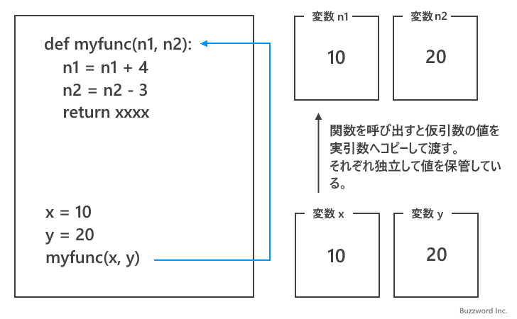
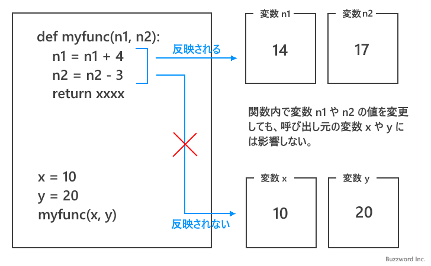
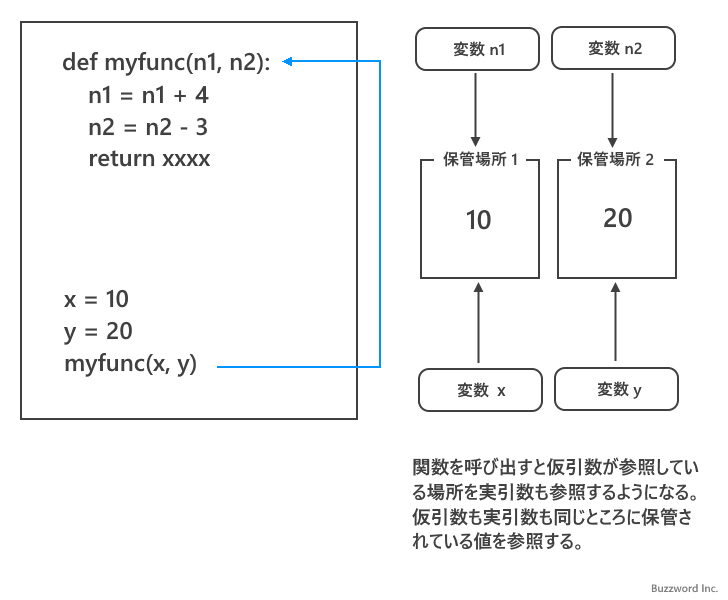
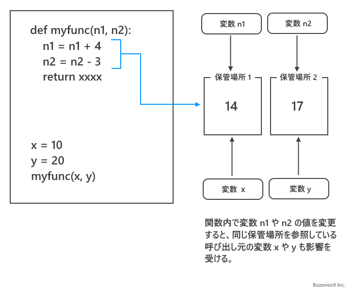
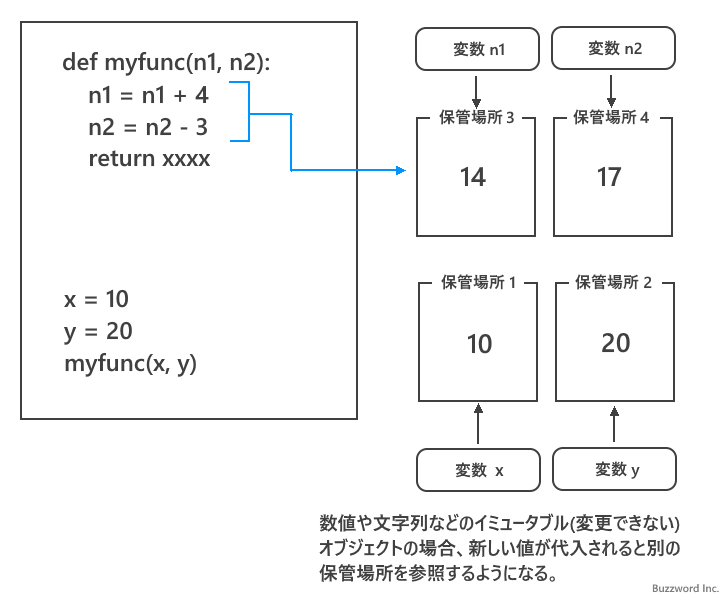
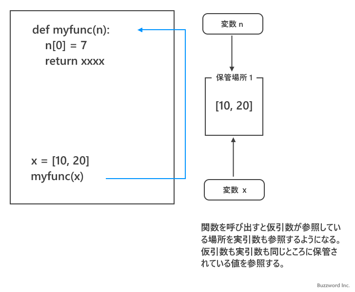
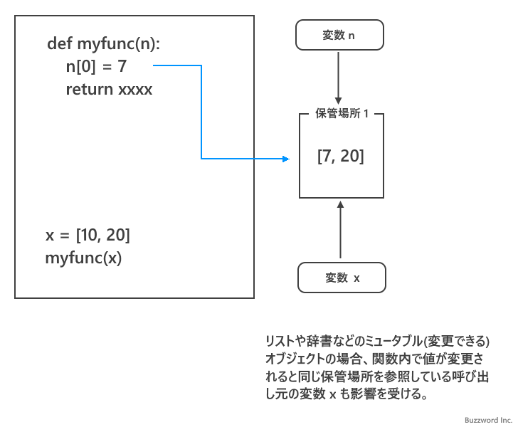

Pythonの引数における参照渡しと値渡しについて
関数を呼び出す時に引数を使って値を関数に渡す場合、 Python では値をコピーして渡す値渡しではなく値が格納されている場所を渡す参照渡しが使われます。ここでは値渡しと参照渡しの違いを簡単にご説明したあと、 Python では実際にどのように引数を利用して関数に渡されるのかについて解説します。
値渡しと参照渡しとは
Python でどのように引数の参照渡しが行われるのかを見る前に、一般的な値渡しと参照渡しの違いについて解説します。(使用されるプログラミング言語によってどちらかの方式が使用されるか決まっているばあいが多いです)。
値渡し
値渡しとは関数を呼び出す時に仮引数に指定した値をコピーして実引数に渡す方式です。

同じ値を保管しますが、保管している場所がそれぞれ独立しているので、関数内で実引数が格納された変数の値が変更されても、呼び出し元の変数の値には影響がでません。

参照渡し
参照渡しとは関数を呼び出す時に仮引数に指定した値が保管されている場所の情報を実引数に渡す方式です。

同じ場所に保管されている値を関数側の変数と呼び出し元の変数が参照しているので、関数内で変数の値を変更すると呼び出し元の変数が参照している値も変更されます。

このように値渡しと参照渡しでは関数内で値が変更された場合の挙動が異なりますので、どちらの方式が使わているのか知っておくことは重要です。
Pythonにおける引数の参照渡しの仕組み
Python では関数を呼び出す時に引数を指定すると参照渡しが使用されます。ただ、 Python の場合文字列や数値などのような一度作成すると変更できないイミュータブルなオブジェクトを引数に指定した場合と、リストや辞書など作成したあとで変更できるミュータブルなオブジェクト引数に指定した場合で少し挙動が異なります。
引数にイミュータブルなオブジェクトを指定した場合
最初に引数に数値や文字列なおイミュータブルなオブジェクトを指定した場合で確認してみます。数値や文字列を指定した場合も参照渡しが使われることは違いがありません。
次のサンプルプログラムをみてください。変数 x に代入されたオブジェクトの ID を出力したあと、関数を呼び出し関数内で変数 n に代入されたオブジェクトの ID を出力しています。どちらも同じオブジェクトを参照していることが確認できます。
def myfunc(n):
print(id(n))
x = 10
print(id(x))
>> 140706808076224
myfunc(x)
>> 140706808076224
ただ文字列や数値などのイミュータブルなオブジェクトは作成された後で値を変更することができません。その為、関数内で実引数を代入された変数に変更が加えられて新しい値が代入されると、別の保管場所に新しい値を保存した上でその場所を参照するようになります。

次のサンプルプログラムをみてください。関数内で変数 n に対して値を変更していますが、呼び出し元の変数 x が参照している値は元のままです。
def myfunc(n):
print(n)
n += 3
print(n)
x = 10
print(x)
>> 10
myfunc(x)
>> 10
>> 13
print(x)
>> 10
このように参照渡しであっても引数にイミュータブルな値を指定した場合には値渡しのような挙動となります。
引数にミュータブルなオブジェクトを指定した場合
次に引数にリストや辞書などミュータブルなオブジェクトをを指定した場合で確認してみます。リストや辞書を指定した場合も参照渡しが使われることは同じです。

次のサンプルプログラムをみてください。変数 x に代入されたオブジェクトの ID を出力したあと、関数を呼び出し関数内で変数 n に代入されたオブジェクトの ID を出力しています。どちらも同じオブジェクトを参照していることが確認できます。
def myfunc(n):
print(id(n))
x = [10, 20]
print(id(x))
>> 1514213397120
myfunc(x)
>> 1514213397120
リストなどのミュータブルなオブジェクトは、あとから要素の値などを変更することができます。関数内で実引数を代入された変数に変更が加えられると、現在の保管場所に保管されている値が変更されるため、関数の呼び出し元の変数が参照している値も変更されます。

次のサンプルプログラムをみてください。関数内で変数 n に対して要素の値を変更を行うと、呼び出し元の変数 x が参照しているリストの要素も変更されます。
def myfunc(n):
print(n)
n[1] = 15
print(n)
x = [10, 20]
print(x)
>> [10, 20]
myfunc(x)
>> [10, 20]
>> [10, 15]
print(x)
>> [10, 15]
このようにミュータブルなオブジェクトを引数に指定した場合は、参照渡しそのものの挙動となります。
Python において引数を使用した場合は参照渡しによって関数に引き渡されることに違いはありませんが、引数に指定したオブジェクトがイミュータブルなオブジェクトなのかミュータブルなオブジェクトなのかによって挙動が異なりますのでご注意ください。
-- --
参照渡しと値渡しの違いについて解説し、 Python において引数の参照渡しがどのように行われるのかを解説しました。
( Written by Tatsuo Ikura )

著者 / TATSUO IKURA
初心者～中級者の方を対象としたプログラミング方法や開発環境の構築の解説を行うサイトの運営を行っています。